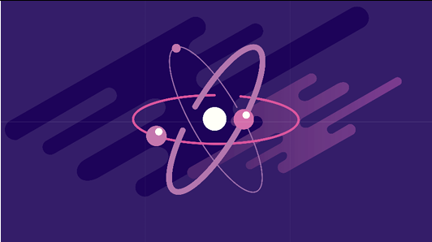

Mengenal Partikel dan Notasi Atom

Perhatikan sekeliling kalian, matahari terbit dari timur di pagi hari, bulan muncul pada malam hari... Bahkan, sampai tingkat paling kecil pun, elektron-elektron di alam semesta ini telah diatur dengan rapi menurut bilangan kuantumnya! Wow apa tuh bilangan kuantum?
Elektron-elektron tersebar di sekeliling atom dengan teratur berdasarkan tingkat energinya. Nah, tingkat energi inilah yang digambarkan dengan bilangan kuantum. Artinya, dari bilangan kuantum, lokasi-lokasi penyebaran elektron dapat digambarkan...
Salah satu contoh atom di alam semesta ini adalah atom karbon. Atom karbon adalah penyusun dari berbagai benda yang sangat berguna. Mulai dari bensin, plastik, berlian, bahkan tubuh kita pun tersusun dari karbon! Nah, karbon (biasa dilambangkan dengan huruf C) punya 6 elektron.
Partikel Dasar Penyusun Atom dan Lambang Atom
Partikel dasar penyusun atom ada tiga yaitu proton (p), neutron (n) dan elektron (e). Jadi, massa atom = (massa p + massa n) + massa e. Massa elektron jauh lebih kecil daripada massa proton dan massa neutron, maka massa elektron dapat diabaikan. Dengan demikian: MASSA ATOM = MASSA p + MASSA n.
| Partikel | Lambang | Massa(g) | Muatan | |
|---|---|---|---|---|
| Satuan | Coulomb | |||
| proton | p | 1.673 x 10-24 | +1 | 1.6 x 10-19 |
| neutron | n | 1.675 x 10-24 | 0 | 0 |
| elektron | e | 9.109 x 10-28 | -1 | 1.6 x 10-19 |
Lambang Atom
z nomor atom merupakan jumlah proton. Saat netral akan sama dengan jumlah elektron.
A nomor massa melambangkan jumlah proton ditambah jumlah neutron atau disebut juga jumlah nukleon.
c Muatan/bilangan oksidasi (biloks).